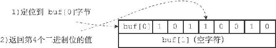

offset÷8」，byte值记录了offset偏移量指定的二进制位保存在位数组的哪个字节。
offset÷8」，byte值记录了offset偏移量指定的二进制位保存在位数组的哪个字节。22.2 GETBIT命令的实现
GETBIT命令用于返回位数组bitarray在offset偏移量上的二进制位的值：
GETBIT
GETBIT命令的执行过程如下：
1）计算byte= offset÷8」，byte值记录了offset偏移量指定的二进制位保存在位数组的哪个字节。
2）计算bit=（offset mod 8）+1，bit值记录了offset偏移量指定的二进制位是byte字节的第几个二进制位。
3）根据byte值和bit值，在位数组bitarray中定位offset偏移量指定的二进制位，并返回这个位的值。
举个例子，对于图22-2所示的位数组来说，命令：
GETBIT
3
将执行以下操作：
1） 3÷8」的值为0。
2）（3 mod 8）+1的值为4。
3）定位到buf[0]字节上面，然后取出该字节上的第4个二进制位（从左向右数）的值。
4）向客户端返回二进制位的值1。
命令的执行过程如图22-4所示。

图22-4 查找并返回offset为3的二进制位的过程
再举一个例子，对于图22-3所示的位数组来说，命令：
GETBIT
10
将执行以下操作：
1） 10÷8」的值为1。
2）（10 mod 8）+1的值为3。
3）定位到buf[1]字节上面，然后取出该字节上的第3个二进制位的值。
4）向客户端返回二进制位的值0。
命令的执行过程如图22-5所示。
图22-5 查找并返回offset为10的二进制位的过程
因为GETBIT命令执行的所有操作都可以在常数时间内完成，所以该命令的算法复杂度为O（1）。